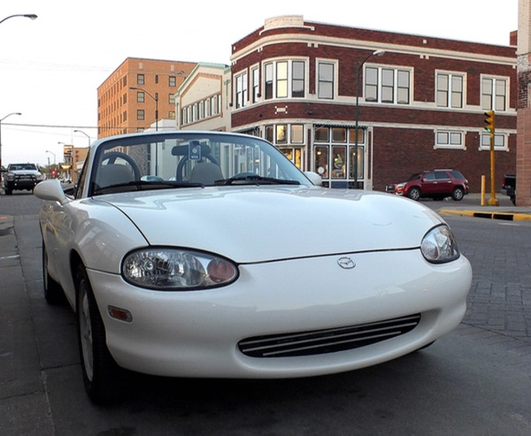
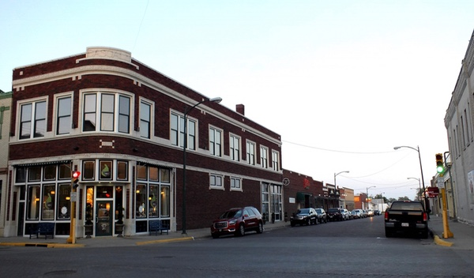

This Fella
I'm a developer with an affection for iOS, Ruby, and Web technologies but I'm always open to new things to play with. I brew my coffee in an Aeropress and spend my free time wrenching on my tiny car. I live in peaceful Western Kansas where I am finishing up my C.S. degree.


I blog about things that grab my tiny attention span at Otters.io. You can find a lot of my open-source work on GitHub.